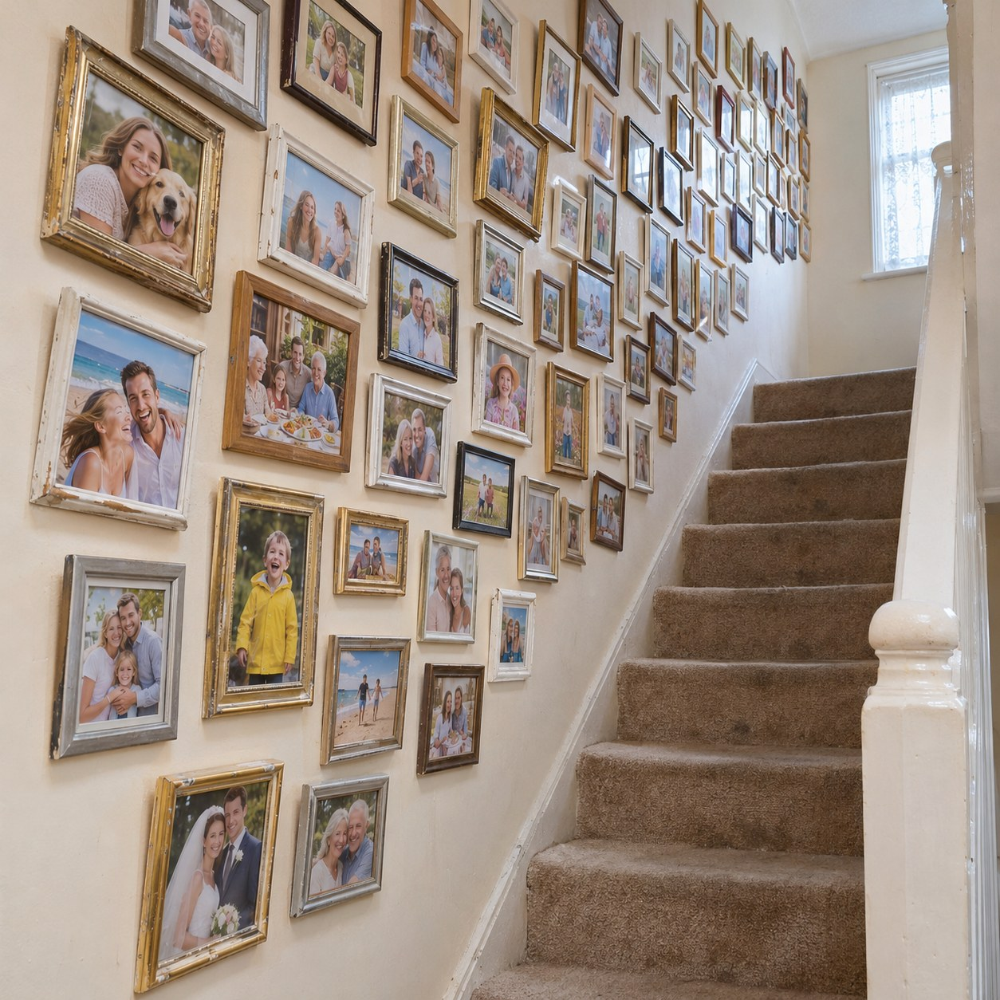
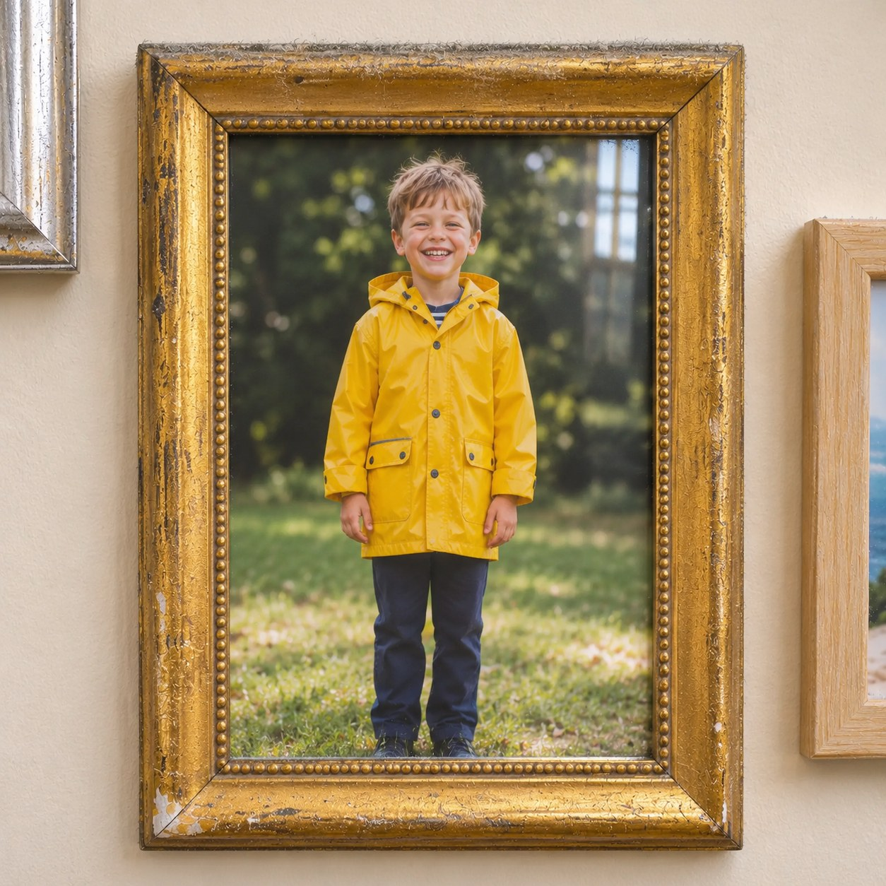

Came With the Frame


New picture frames come with someone already in them. A couple laughing on a beach. A boy in a yellow coat. Three generations round a table. They are models, photographed to fill the opening, and the picture is there to be taken out. Everyone understands that it is only holding the place.
For two years I looked in charity shops for frames that had been given away with that picture still inside. I found sixty-three. Each one was bought for someone, carried home, and never got them. Some of the glass is scratched, some of the stands are bent from years on a shelf. The frame had a life. It just never had its person.
I have hung them all up the wall of my stairs, the way families do.
In Camera Lucida, Roland Barthes writes about one photograph of his mother as a small girl in a winter garden, the one in which, for him, she was really there. He would not print it in the book. To his readers, he said, it would be just another picture. A photograph can belong to one person so completely that it is no use to anyone else.
These are the opposite. They were made to belong to anyone, and so they belong to no one. Nobody has ever looked at one of them and seen someone they know.
I pass them every night on the way up to bed. I have started to know them. The boy in the yellow coat. The woman at the head of the table, who is always about to speak. I could not tell you who they are. But they are the faces on my stairs, and I would notice if one went missing.